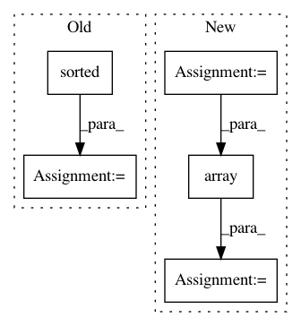

d2dbd440d89d22b4b75f30ddeb4c4ebd3882ecfa,tools/sort.py,Sort,sort_face_dissim,#Sort#,208
Before Change
img_list[i][2] = score_total
logger.info("Sorting...")
img_list = sorted(img_list, key=operator.itemgetter(2), reverse=True)
return img_list
def sort_face_cnn(self):
Sort by CNN similarity
After Change
input_dir = self.args.input_dir
logger.info("Sorting by face dissimilarity...")
images = np.array(self.find_images(input_dir))
preds = np.array([self.vgg_face.predict(cv2.imread(img))
for img in tqdm(images, desc="loading", file=sys.stdout)])
logger.info("Sorting. Depending on ths size of your dataset, this may take a while...")
indices = self.vgg_face.sorted_similarity(preds, method="complete")
img_list = images[indices]
return img_list
def sort_face_cnn(self):
Sort by CNN similarity
In pattern: SUPERPATTERN
Frequency: 3
Non-data size: 5
Instances
Project Name: deepfakes/faceswap
Commit Name: d2dbd440d89d22b4b75f30ddeb4c4ebd3882ecfa
Time: 2019-05-14
Author: 36920800+torzdf@users.noreply.github.com
File Name: tools/sort.py
Class Name: Sort
Method Name: sort_face_dissim
Project Name: broadinstitute/gtex-pipeline
Commit Name: 1868550f1b5db4294f65ad06cc657f76f8b0f96c
Time: 2017-05-15
Author: francois@broadinstitute.org
File Name: rnaseq/src/combine_GCTs.py
Class Name:
Method Name:
Project Name: rtavenar/tslearn
Commit Name: 6ffdbc8963b6bcaf686af1a9d5b7ddf212dbfc31
Time: 2020-04-21
Author: romain.tavenard@univ-rennes2.fr
File Name: tslearn/early_classification.py
Class Name: NonMyopicEarlyClassification
Method Name: fit